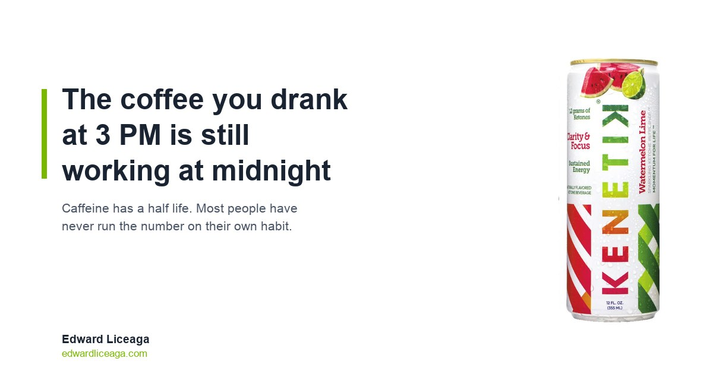

The Coffee You Drank at 3 PM Is Still Working at Midnight
Caffeine has a half life. Almost nobody has run the arithmetic on their own afternoon habit, and the number is worse than it feels.

Most people treat caffeine as something that happens and then stops happening. You drink it, you feel it, it wears off, and by evening you are back to baseline.
That is not how it clears. How long caffeine stays in your system has an actual answer, and the gap between that answer and how it feels is where a lot of bad sleep comes from.
How long does caffeine stay in your system
The number that matters is half life: the time your body needs to clear half of what you took in. For caffeine in a healthy adult that averages around five hours, with a normal range of roughly three to seven hours depending on genetics, liver function, medication, pregnancy, and whether you smoke.
Run it forward on an ordinary afternoon coffee. Say 200 milligrams at 3 PM, which is a large drip coffee or a double shot drink.
- 8 PM: about 100 mg still circulating
- 1 AM: about 50 mg
- 6 AM: about 25 mg
Fifty milligrams at one in the morning is not nothing. That is roughly half a cup of coffee, in your blood, while you are trying to be unconscious.
And that assumes an average clearance rate. If you sit at the slow end near seven hours, the same 3 PM coffee still has about 100 mg working at 1 AM.
Why "I fall asleep fine" is the wrong test
The usual objection is that you drink coffee at four and sleep at ten without trouble. That is probably true. Falling asleep is not the measurement that matters.
Caffeine does not create alertness. It blocks adenosine, a molecule that builds up in your brain across the waking day and produces the pressure you experience as sleepiness. Caffeine sits on the receptor so the signal does not land. The adenosine keeps accumulating the entire time. Nothing gets removed. The message gets intercepted.
That is why the wall you eventually hit feels out of proportion to the moment. You are not tired from the last hour. You are taking delivery of several hours of held mail at once.
Sleep quality behaves the same way. In a controlled study published in the Journal of Clinical Sleep Medicine in 2013, Drake and colleagues gave subjects 400 milligrams of caffeine at 0, 3, and 6 hours before their normal bedtime. All three conditions disrupted sleep measurably against placebo. The six hour condition, which is late afternoon by anyone's reckoning, cut total sleep time by more than an hour on the sleep monitor.
The useful part is what the subjects reported. At six hours out, they largely did not notice. Self report and the monitor disagreed. People believed they had slept normally and had not.
The version that compounds
One night an hour short is a bad Tuesday. The pattern is the actual problem.
You sleep less because of afternoon caffeine. You wake up short, so you need caffeine earlier and in larger amounts to cover the deficit. The day runs long, so the last dose moves later. Each turn makes the next turn more likely.
Nobody chooses this. It assembles itself out of a series of individually reasonable decisions.
It stays invisible because the cost never arrives attached to its cause. The 3 PM coffee produces a 2 AM wake up nine hours later, and by then it reads as stress, or a warm room, or getting older.
What the arithmetic actually suggests
Work backward from when you want to be asleep instead of forward from when you feel tired.
If you sleep at 11 PM and you want caffeine mostly cleared, the last dose lands somewhere around 1 PM to 2 PM. That is earlier than almost anyone runs, and it is simply what halving every five hours produces.
Which creates the real problem. The 2 PM to 4 PM window is exactly when most people need something. Adenosine has been stacking up since morning, lunch is doing its own work, and there are four hours of the day left that still have to be good.
The honest option list is shorter than the wellness industry suggests. Sleep more at night. Take the dip and work through it. Walk outside for ten minutes. Or use something that is not a stimulant.
Where a ketone drink fits
I sell one, so read this section accordingly.
Kenetik is a ketone drink. It is not an energy drink, and that distinction is the entire point here. Ketones are a fuel your body already makes: your liver produces them from fat when glucose runs short, and your brain uses them readily. A ketone drink supplies that fuel directly rather than blocking a tiredness signal.
There is no caffeine in it. Nothing to clear at midnight. No half life to run arithmetic on. Nothing borrowed against tomorrow.
The can is 12 grams of ketones, zero caffeine, zero sugar, 60 calories, nothing artificial. It is Informed Sport certified, meaning an outside lab tests batches instead of the company grading its own work. I covered what that certification does and does not mean in Informed Sport Certified.
What it supports is clarity, focus, and cognitive endurance. That is the claim as stated and I am not going to inflate it. It is not a sleep aid. It does not repay a sleep debt. It is not a substitute for going to bed. What it does is take the 3 PM decision and remove the part of it that charges you at 1 AM.
If the afternoon slump specifically is your problem, I went through the mechanism at more length in The 2 PM Wall.
The short version
Caffeine's half life averages about five hours, so an afternoon dose is still measurably present at bedtime. Controlled research finds it cuts sleep even taken six hours before bed, and even when the sleeper does not notice.
If you want to know how long caffeine stays in your system in terms you can act on: halve the dose every five hours and read across to your bedtime. Most people have never run that number on their own habit. Running it once tends to change what time the last cup happens.
Caffeine free, sugar free, 12 grams of ketones. My link if you want to try it: https://drinkkenetik.com/EDDIEG, promo code EDDIEG.
I earn a commission on purchases through this link. This article is consumer information and is not medical advice.